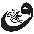

580. Karanlıktaysan ışığa odaklan, karanlıktan söz etme, ona tutunma, ona enerji verme ve onu besleme; yoksa karanlık içinden çıkamayacağın bir büyüklüğe ulaşacaktır.
581. Varlığın çiçek açtığı için güneş vardır ve yağmurlar yağar; şayet sen çiçek açmasaydın onlar ne diye sana ışık tutup su vermeye kalkışırlardı ki?
582. Nefes aldığın sürece nefes aldıranı hisset, bu seni mucizelerle karşılaştıracaktır! Mutluluk, kendi dünyamızın içindedir, o dışarıda değildir. İnsanları biraz izle, onlar her an sevgiyi aramakta, niçin? Çünkü onlar kendinde olmayan bir şeye ihtiyaç duyuyorlar, şayet onlar varlığından haberdar olsalardı; sevginin de kendi kaynaklarında olduğunu idrak edeceklerdi.
583. Ve ben sana duyguya bağlı bir mutluluğun peşinde olma diyorum, özündeki mutluluğa erişerek huzurun kendisi ol! O zaman baktığın her yerde ilahi bir huzur yaşamaya başlarsın.
584. Tekrarlamanı isterim:
Bütün doğrularımı bıraktım, bütün yanlışlarımı bıraktım, bütün güzellikleri bıraktım, bütün çirkinlikleri bıraktım. Bütün bölünmeleri bıraktım; çünkü düaliteyi oluşturanın zihnin kendisi olduğunu fark ettim.
585. Ve bütün kırgınlığımı, kaygılarımı, korkularımı, güvensizliğimi, sevgisizliğimi, hayal kırıklıklarımı bıraktım.
586. Şimdi içimdeki enerji nehri takılmadan süzülerek akıyor ve ben bunu tüm hücrelerimle yaşıyorum.
587. Hep bir yarın vardır da; biz hep böyle yarına kalacak mıyız?!.
588. Dışarıda olan savaş senin içsel çarpışmaların sonucunda meydana geliyor. Onlar dışarıda gibi gözüküyor; fakat kökü içeride. Önce köküne inmelisin, savaşın başladığı içsel çarpışmalarını izlemelisin ve kendini doğru yola sokmalısın, sen hakikatin yolunu bulduğunda dünya da kendiliğinden doğru yolu bulacaktır!
589. Negatif ile pozitif bir enerjidir ve onlar birlikte bütünü oluştururlar. Onlar senin gördüğün gibi ayrı değillerdir, biri yüzeyde, diğeri ise daha derindedir ve sen yaşama yüzeysel baktığın için negatif olanı görmektesin! Pozitif enerji sevgiyle beslenir, o yüzden ağırlığı vardır ve onun derinlerde olma sebebi tamamen bundan kaynaklıdır.
590. Sevgi derindedir, o pozitif kısmın içinde beslenir. Negatif enerji ise boş bir haldedir, o yüzden hafiftir ve yüzeydedir; onu sen düşüncelerinle besler ve büyütürsün! Şayet onların nasıl beslendiğini ve akış şeklini izleyebilirsen yaşamın tamamen değişime uğrayacaktır. O zaman eve varmış olursun; çünkü bu sevgiyle bütünleşmeni sağlayan ilahi bir yolculuktur!
591. Şimdi içinde tutsak ettiğin tüm olumsuzlukları, düşünceleri bırak gitsin. Onlar sana ait değiller. Onların hepsi evrene ait ve ait oldukları sonsuzluğa kavuşmak için sabırsızlıkla senin iznini bekliyorlar. Bugüne kadar onları beslediğin için peşinden ayrılmadılar, beslediğin her ne ise senin peşinden ayrılmayacaktır, bunu izle! Onlar senin tutsağın, sen onların tutsağı değilsin. Ve şimdi tutsaklarına sevgiyle yolu göster gitsinler.
592. Yaşam bir savaş alanı değildir. Elindeki ok ve yayı bırak; tıpkı yeni âşık olmuş bir insan gibi düşüncelerinin, korkularının, kaygılarının içine, onların ta derinliğine aşkla bak ve göreceksin onlar aşka dönüşecektir!
593. Sen nasıl bakarsan, karşındaki baktığın şeye dönüşür. Sen bir savaşçı olursan karşındaki de savaşçı olacaktır. Sen sevgi olduğunda her şey sevgiye dönüşecektir.
594. Ne zaman mutluluğu arzularsan ona ulaştığında çabuk kaybedeceksin; çünkü onu, varlığının derinliğine inen bir yolda değil, nefsin ulaşmak istediği yüzeyde arıyorsun!
595. Ve sana bir daha söylüyorum, bunu anbean tekrar etmekten hiç usanmayacağım: Mutluluk, tüm çabalarını, tüm koşturmalarını, tüm zihinsel düşüncelerini bıraktığın anda yağmurdan sonra gökyüzünde köprü kuran gökkuşağı gibi birden karşına çıkacaktır.
596. Önemli olan senin içinde bir parlamanın oluşması, aydınlık içinde gerçekleşirse bunu varlığın hissedecektir, ancak aydınlık için dışarıdan birisinin sana fener tutmasını istersen gerçekleşecek tüm bu güzelliklerin anlamı kalmayacak, olanları hissedemeyeceksin. O çok yapay olacaktır ve sen bundan asla haz alamazsın. Bu yüzden ilk adım içindeki ışığı keşfetmendir.
597. İnsanları izle, çoğu “Biz büyüdük ve kirlendi dünya” diyerek varoluşu suçlamakta. Bir çocuk için ise bu dünya için muhteşem bir potansiyel, coşku ve enerji alanıdır. Kirlenen senin bakış açından başka bir şey değildir, kirlenen senin zihnindir!
598. Ve senin bakışların bu kadar kirli ise dünyadaki sevgi bahçelerini nasıl görebilirsin?
599. Hayat sana şöyle sesleniyor: Aslında sana güzellikler saçan bir çiçeğim, fakat sen kirli baktığın için beni de kirlenmiş görüyorsun!
600. Yüreğinde hissettiğin sana her zaman en yakın olandır ve Allah’ı kendi yüreğinde hissedebiliyorsan, O’nun ruhundan bir parçayı kendi ruhunda taşıdığını duyumsayabiliyorsan zaten cennettesin demektir!

601. Sen çocukken yaşamı seviyordun ve o da sana sımsıkı sarılmıştı, sonra sen büyüdün ve yaşamın içinde kusurlar bulmaya başladın, onu kucaklamayı bıraktın; şimdi sen yaşamın elinden tutmadığın için o da senin ellerinden tutamıyor!
602. Sevgi yolunda olan bir insanın parfüm kullanmasına gerek yoktur, o zaten cennet kokuyordur.
603. Sen henüz doğmadın, sen yaşamın karnındasın, onun içindesin, sen gebe olan bir yaşamın karnındaki çocuksun, hâlâ masumsun, bunu idrak ettiğinde kendi derinliğine, özüne doğru yaklaşmaya başlayacaksın.
604. Dinginlikten huzur doğar, kalabalıktan ise yorgunluk. Bu yüzden bazen insanlardan uzaklaşarak kendini kaybetmen, tek başınalığının tadını çıkarman sana muazzam bir derinlik getirecektir.
605. Sev, sev, sev, sev... Bu yol sevgi yoludur. Sevdikçe acılar gelecek ve sen acıları sevmeyi öğrendikten sonra acılar sevgiye dönüşecek. Sev, sev, sev, sev. Yaşam sana her ne verirse, her ne sunarsa sev; unutma ki sevginin kaynağı Allah sevemeyeceğin bir şeyi senin karşına çıkarmaz. Sen bir kere acıyı sevdiğinde, sen bir kere düşmanını sevdiğinde tevekkül içinde yaşamaya başlarsın.
606. Sevgi tüm güzelliklere açılan kapının anahtarıdır. O zihinsel değil, yüreksel bir dokunuştur.
607. Eğer nedenleri düşünecek olursan geçmişine takılı kalır, bugününü yaşayamaz ve aldığın soluğu hissedemez hâlâ gelirsin. Bırak nedenlerle varoluş ilgilensin, sen her şeye cevap bulmak zorunda değilsin. Evrenin bilgeliğine güven, kendini akışa teslim et, o akışta tüm cevaplar sana ulaşacaktır.
608. Sen görebildiğin insanları sevemiyorsun, göremediğin Allah’ı nasıl seveceksin?
609. Beyaz eşyan bozulduğunda ne yapıyorsun? Onu servise teslim ediyorsun, öyle değil mi? Ya da fiziksel olarak hastalandığında kendini doktora teslim ediyorsun. Ancak çok önemli bir şeyi ıskalıyorsun; sen dibe vurduğunda, ruhsal sıkıntı içinde kaldığında kendini Allah’a teslim etmiyorsun! En zor anında Allah’a teslim ol, O’nun sana sunduğu yaşama teslim ol ve yaşamın kendisine dönüş. O zaman hakikatin eşsiz kokusuyla mutlak huzuru kucaklayacaksın.
610. Sabah kalkıyorsun ve zihnin şöyle sesleniyor: “Hadi kalk, giyin ve işlerine koyul!” Arkasından yüreğin, “Bunu yapma. Bak orada bir güneş var, yeniden doğdu bizim için, yeni bir tazelik, yeni bir ısı, yeni bir ışık; işte orada. Bak şarkı söylüyor güneş, bulutlar onun eşliğinde dans ediyorlar. Rüzgâr bu senfoniye eşlik ediyor. Hayat rengârenk, önce yeni yaşamı kucakla!” diye sana mırıldanıyor. Eğer onun eşini bir kez duyabilirsen karanlık yaşamın artık renklenmeye başlayacaktır.
611. Yaşamın derinselliğine bak! O hep yeniliktir, hiçbir şey göründüğü gibi değildir ve hiçbir şey yüzeyde göründüğü gibi aynı noktada dans etmez. Ve şimdi kendi derinselliğini izle, içindeki harika değişimi, muhteşem enerjini ve hücrelerin sevgiyle dansına şahit ol.
612. Şayet kendine ve yaşama yüzeysel bakarsan bunların hiçbirini göremezsin, onları görmek yürekle bakmayı gerektirir ve o güzellik sende fazlasıyla var!..
613. Ben senin önce içsel olarak zenginliğe ulaşmandan yanayım. Sen bir ev inşa ediyorsun, fakat temeli yok, sen birinci katı yapmaya koyulmuşsun. Şimdi senin evin nasıl ayakta durabilir? O yıkılmaya mahkûmdur. Onun temeli yok ve ben sana temel veriyorum. Al ve onu kullan, sen sonra üzerine katları çıkarsın. Emek katarsın, başarı katarsın, kariyer katarsın; ama önce temeli oturtman/ruhunu olgulaştırman gerekir.
614. Ben senin dengesiz değil, denge içinde bütünlüğü kucaklamandan yanayım, yoksa eriştiğin her şey bir anda yok olacaktır!
615. Yaşama derinsel bakamadıktan sonra onun içinde gördüğün güzellikler yapay bir çiçekten farksızdır. Onlar sana güzel kokmayacaktır, güzel gözükebilir ancak bu yüzeysel bir güzelliktir, ancak sen kendi derinliğinden baktığında yaşamın derinliğini görebilirsin.
616. Mutlak mutlu olmanın bir formülü yoktur, mutlak mutluluk zaten varlığının derinliğindedir, o sensin. Üzerinde sadece kara bulutlar var, siyah düşünceler... Bu yüzden mutluluğu hissedemiyor olabilirsin. O halde kara bulutların geçmesini beklemek yeterli olacaktır. Hiçbir insan gücü bulanık bir nehri berrak yapamaz, Varoluşun uygunluğunda o kendiliğinden berraklaşır. Yaşamla ilgili bir formül isteyerek bütün gizemi sorgulamış oluyorsun. Allah gerekli şeyleri düşünmüş olmalı ve şimdi buradasın. Formül diye bir şey olamaz, bunu unut, böyle bir şeyi sakın sorma, bu en büyük günahtır!
617. Deniz bazen dalgalıdır ve bazen durgun, okyanus dinginliğine insan kuvvetiyle değil, varoluşun uygun gördüğü zamanlamayla kavuşur.
618. Hayat bir savaş alanı değildir, o bir yarış alanı da değildir, tüm koşturmaları ve arzuları bıraktığında yaşamı hissetmeye başlarsın. İşte bu tam anlamıyla gerçek bir doğuştur, yaşamın gebe karnından sevginin doğasına geçişin kutlamasıdır.
619. Allah kusursuzdur ve O yarattığı her şeyi kusursuzca, özenerek yaratmıştır. O seni yaratırken ruhuna kendi ruhundan üflemiştir. Sen, O’nun tarafından bu kadar özenle yaratılmışken kendine inanmamak ve kendini değersiz görmekle en büyük günahı işliyorsun! Evrende başka sen yok!
620. Unutma, senin en büyük zenginliğin aldığın soluğu hissetmendir!
621. Güzel dileklerin kendinle birlikte varoluşun/bütünün adına olduğunda taleplerin geri çevrilmez; çünkü sen Allah huzurunda, O’nun en değer verdiği “birlik” için yüreğini ortaya koyan bir meleğe dönüşmüş olursun.
622. Sevgiyi arzulayan bir egoya dönüşme, sevginin içinde açan bir çiçek ol.
623. Konuşmayı azalttığında muhteşem bir boşluğun içinde yükseldiğine şahit olursun. Bütün düşünceler, bütün konuşmalar bir anda yerini huzura bırakmıştır ve varlığında açan çiçeklere şahit olmaya başlarsın. Dengede kalan bir sessizlik anı oluşturduğun yer senin cennetindir. Orada sevginin kokusu bütün ruhunu sarar, içinde cıvıldayan kuşların sesini duymaya başlarsın.
624. Tezahür eden her şey senin içinde canlanmaktadır. Huzurlu olmak ise çok basittir, tek yapman gereken yaşamın içinde vuku bulanı kabul etmek ve onunla bütünleşmektir. Gerçekleşen her ne ise onu kabul ettiğin anda huzur kapıları ardına kadar açılmaya başlar.
625. Aldığı nefesin farkında olan bir insan dışarıda mucizeler aramaz, o zaten mucizenin kendisidir.
626. Sana öğretilenler bir gölgedir, güneşle birlikte sönüp gider. Sadece hakikati ara, diğer her şeyi bırak. Her şeye tutunduğun için hakikati bulamıyorsun!
627. Sana tüm gerçeği söylemeliyim. Bu çok ağır, kabullenilemez olabilir, fakat artık bunun farkında olmalısın. Eğil biraz! Sevecek kimse yok, sevilecek kimse yok. Üzülecek ya da mutlu olacak hiçbir şey yok, sadece Allah var, gerisi bir rüya, sadece bir düş!..
628. Niçin bu kadar mutsuzluk, bu kadar huzursuz insanlar topluluğu var hiç düşündün mü? Çünkü sen sadece mutluluğu istiyorsun, geri kalanını reddediyorsun. Fakat bu dünya zıtlık dünyasıdır, her neyi reddediyorsan ona büyük bir enerji vermiş olacaksın. Bunu fark ettiğin an senin içinde büyük bir değişim başlar, fakat bu bir kişisel gelişim değil tam aksine bu senin öze dönüşümündür! Yine dünya denen tatlı zehir karşındadır, fakat sen sadece içindeki güllerin kokusunu duyumsarsın, dışarıda olan sana işlemez.
629. İnsan gelip geçen duygularıyla mutlu olamaz. Bu, güneşin yazın gökyüzündeki yerini alması, kışın ise kaybolması gibidir. İnsan varlığından yükselen ilahi nurla mutluluğun kendisi olmalıdır, bu duyguların ötesinde, nihai olan mutluluktur.
630. Sadece tek bir rüya, sadece geceleri görmüş olduğun rüyanın var olduğunu düşünüyorsun, oysa bu dünya âlemi de bir rüyadır. Kim bunu fark eder ki, o zaman uyanır, aydınlanır ve kim aydınlandıktan sonra iman eder ki, o da kanatlanır, nurlanır.
631. Sen sustuğunda ruhun dile gelir, yüreğinle konuşur; işte bazen sessizlikte hissettiğin huzur bundandır.
632. Sen ne zaman ki balı arının yapmadığını, ona sadece sebep olduğunu idrak edersen, sevgi ve aşkın da sana başka birinden gelmediğini, onun kendi özün olduğunu duyumsayacak ve arayışı bırakacaksın, işte o an bir nur üzerine düşecek ve ferahlayacaksın!
633. Derdin büyük diye üzülüyorsan arzularına bak, mutlaka büyük arzular içindesin!
634. Sadaka vermek için paran olması şart değildir, kalbini kıran insanlara hâlâ selam verebiliyorsan bu en büyük sadakadır, bu ruhunun sadakasıdır.
635. Hâlâ mı mutsuzsun? O halde idrak et! Sen Rabb’inin en kutsal eseri, bu dünyada ruhunu ruhunda taşıdığın halifesisin. Şükret ve yoluna devam et.
636. İki tür insan vardır: Yaşamın akışıyla birlikte süzülen ve yaşamın akışına karşı kürek çeken! Biri huzurun içindedir, diğer ise düşüncelerinin esiri olmuştur.
637. Birileri seni çekemiyor, tahammül edemiyorsa daima anımsa, ulaşmak istediği hazinenin gerçek sahibi sen olduğun içindir.
638. Farkındalık yolu sevgi yoludur ve sevgi yolu cennetin kapısına ulaşan yoldur; bu yola hiç kimse kin ve nefretle giremez.
639. Kimseyi ayıplama, evren senin aynandır, o sadece seni yansıtır. Başkalarıyla iletişim kurmadan önce kendi içine dön ve kendinle konuş; çünkü kendi yüreğinin sesini dinleyemeyen bir insan kimseyi duyamaz. Elindeki bütün kitapları bırak ve önce kalbinin kitabını oku; çünkü kalbinin kitabı, okuduğun tüm kitaplardan daha anlamlıdır. Patronunun yanında bir başka maske, evde başka maske...
640. Bu seni sadece yoracaktır, bütün maskeleri bırak ve kendin ol, ancak o zaman tam olarak özgürlüğe ulaşabilirsin. Ve konuşmalarını usul usul azalt; çünkü aşk, sen sustuğunda konuşmaya başlar. Sana taş atana sen gül ver; ver ki kaynağın sevgi olduğunu daima anımsayasın. Ve sadece sev; çünkü sen Allah’ın rahmeti olan sevgiyi çevrene yaymak için gönderdiği seçilmiş bir varlıksın.
641. İnsanoğlu nefsine hâkim olamadığı için cennetten kovuldu, yine aynı insanoğlu nefsine hâkim olamadığı için dünyada sürünüyor. Sadece farkında ol, cevaplar kendi derinliğinden gelecektir.
642. Kin esaretindir.
Kin hapishanendir.
Kin hastalığının yegâne sebebidir.
Kin enerjinin eriyip gitmesidir.
Kin kendine verdiğin en büyük cezadır.

643. Hayatın anlamı nedir biliyor musun? İşte bu sorunun cevabını sana kim vermeye kalkışıyorsa onun yanından uzaklaş ve kendi içine dön. Çünkü hayat yalnızca senin ona kattığın anlamla şekillenir.
644. Kalbi Allah’la olan bir insandan korkma, zihni Allah’la olan insandan kork; çünkü o dini kullanarak seni hipnotize ediyordur!
645. Sen sorunları dert sanıyor üzülüyorsun, oysa Allah’tan gelen her şey rahmettir.
646. Nasıl bu kadar huzurlu olduğumu soruyorsun. Sana sadece tek bir söz söyleyeceğim: “Derdi dünya olanın dünya kadar derdi vardır” der Can Yunus, Miskin Yunus. Benim tüm dünyam Allah, O’ndan da sadece huzur ve sevgi geliyor...
647. Farkında olmayan insan yoktur, birey “Ben mutsuzum” dediğinde bile mutsuz olduğunun farkındadır. Düşüncelerini biraz izlemeni isterim, düşünce sana zarar veriyor gibi gözükse de; özüne dönüşümünde kullanacağın en güzel kapıdır.
648. Ben sana bütün dertlerinde, bütün hüzün ve kederlerinde sadece içindeki sevgiyi hissetmeni söylüyorum. Çünkü o tüm duaların, tüm ibadetlerin başlangıcıdır.
649. Mutsuzluk seni ziyaret etmeden önce mutsuzluğun geleceğini bil ki, şimdi mutlu olduğunun farkında olasın!
650. Benim görüşüme göre cennete açılan kapının anahtarında dört tane “s” vardır: sevgi-şükür-sabır-sadakat...
651. Engelleri bir tarafa bırak, ilk hedefin kendini aşmak olsun ve sonra tüm engeller bir anda önünde diz çökecektir.
652. İnsanları anlamaya çalışmak sana zaman kaybı verir, kendini anlamaya çalışmak ise sana seni verir!
653. Mucizeler, farkına varılmamış hazineler gibidir, onlar her zaman bir kenarda keşfedilmeye beklerler. Ve her insan bir mucizedir, ancak birey bunun farkına vardığı an manevi zenginliğine ulaşacaktır.
654. Geçmişin acıları içindeki kara bulutlardır; onlarla yaşamaya devam ettiğin sürece; içindeki güneş örtülü kalır ve acıları bıraktığın an güneşin bir anda yükselir, içinden bir nur, bir rahmet sıcaklığı yükselir.
655. Bu dünyaya o kadar çok tutunmuş, o kadar derin kök salmışsın ki, bu yüzden yaşam çoğu zaman senin kâbusun oluyor. Unutma, dünya bir konaklama alanı değil, o sadece bir geçittir!
656. Bütün hazineler senin içinde gizlidir, krallık senin merkezinde inşa edilmiştir, cennetin kapıları semaların kat kat üzerinde, fakat birinci kapısı varlığının ta derinliğindedir!
657. Topraktan geldiğini ve oraya döneceğini unutma, bir toprak ol. Ve insanlar seni çiğnese bile sen onlara tıpkı bir toprak gibi çiçekler sun. Ancak o zaman rahmet, bereket ve sevgiyle taşarsın.
658. Sana mutluluk adında bir melek gönderildi ve sen onu “Seni ne zamana kadar yaşayacağım?” diyerek elinin tersiyle geri ittin! O tekrar geldi ve sen zihnine uyarak her defasında onu geri çevirdin. Ancak o bıkmadan tekrar sana dönecektir. Varlığından yükselen titreşimi takip et, o senin yüreğine huzur verecektir.

659. Hayat sadece sen paylaştıkça ya da sen sevdikçe değil, hayat var oldukça güzel. O halde içine dön ve kutsal varlığını sevgiyle, şükürle kucakla.
660. Ben sana “Kalbinin sesini dinle” derken içindeki bir sesten söz etmiyorum. Sözlerin kalpten geleceğine mi inanıyorsun? Hayır! Tüm sözler zihne aittir, şayet içinden “Bak bu adam/kadın seni mutlu edebilir, bir şans ver” gibi sözler geliyorsa bu da zihnin oyunlarından biridir. Benim işaret ettiğim kalbin sesi doğadan gelir; bazen bir kedi, bazen bir köpek ve rüzgârın fısıltısı ya da yağmur damlalarının cama vuruşunda.
661. Yaşam yolculuğunda her şeyle tanışabilirsin; aşkla, terk edilmeyle, öfkeyle... Şayet yaşıyorsan her şey gelir ve geri gider. Bu güzel bir şey; sen hâlâ canlısın, hâlâ nefes alıyorsun. Tanışmak sana zarar vermez, ancak onun içine işlemesine izin verdiğinde yaşamın bir kaosa dönüşür. Gelen her şeye teşekkür et ve şükret, unutma ki sen var olduğun için onlar varlar. Ve bu farkındalıkla varlığını katlayabilirsin.
662. Ben sana bir gün aşktan söz edebilirim, onun derinliğini yaşamanı dileyebilirim ve bir bakmışsın diğer gün namazın verdiği huzuru konuşabilirim, sana zikrin muazzam derinliğinden söz edebilirim... Ayırdığım hiçbir şey yok, sadece, senin bütünlüğün içinde olgunluğa kavuşan bir varlık olmanı diliyorum.
663. Sevgisiz insan boştur ve boş insan sadece senin enerjini kendine doğru çeker, onun sana verebileceği hiçbir şey yoktur, o sadece almasını, kendi boşluğunu doldurmasını bilir. O senin yaktığın şöminenin ısısıyla geçinir, şömineye her zaman senin yakacak atmanı bekler!
664. Eğer bir bulut ya da bir yıldızla arkadaş değilsen, hiç kimseyle gerçek anlamda arkadaş olamazsın. Çünkü onlarla olan arkadaşlığın çok derinden olacaktır ve sen derinsel bakışı öğrenmeden yüzeyde gördüğün her şeye farkında olmadan zarar vermeye başlarsın.
665. Köpekler insanlar gibi değildir, onlar ayna gibidir; senin mutluluğunla mutlu, senin hüznünle hüzünlü olurlar.
666. İçindeki dünya sana şöyle sesleniyor: Ben sana güzellikler saçan bir çiçeğim, fakat sen kirli baktığın için beni de kirlenmiş görüyorsun! Ancak zihnin o kadar kalabalık ki, içinde o kadar çok gürültü var ki, sen yüreğinden süzülen bu mırıltıları duyamıyorsun.
667. Gerçek sevgiyi arıyorsan karşındakinin gözlerine değil, kalbine bak; fakat önce kalbin yoluyla tanışmalısın, yoksa diğerinin kalbine nasıl inebilirsin? Önce kendi kalbinin yolunu keşfet ve sonra diğerinin içine akış gerçekleşir; işte bu nokta bir oluşun ta kendisidir.
668. Sadece yaşamın gerçekliğine uyum sağla, ruhun ağlamaya ihtiyacı varsa ağla, gülmeye ihtiyacı varsa gül, her deneyimi yaşa, kontrol etme. Şayet kontrol edersen bütün enerjini dışarıya akıtmış olacaksın. Sessiz ol ve yaşamın akışını izle o akışta gelen her şey mucizedir.
669. Sözler ısıtmaz, sözlerin içi boştur; bu yüzden sözleri bırak, kalbini aç. Sevgi sözlerin içinde değil, kalbin sessizliğinde filizlenecektir. Şşşştt! Sessiz ol...
670. Mutsuzlukla niçin savaşıyorsun? O senin düşmanın değil, sen onu düşman gibi görmeye koşullandırdığın için mustarip oluyorsun, hepsi bu! Onu kabul et ve onun içinde eri, bu erime sana yeni bir kök, yeni bir doğuş getirecektir.

671. İnsanları anlamaya çalışıyorsun, hayatı anlamaya çalışıyorsun, aşkı anlamaya çalışıyorsun, niçin? Çünkü toplum seni anlama odaklı yetiştirdi. Eğer anlamazsan hep bir şey eksik kalacak, dendi... Ve sen sevgiyi ve sen aşkı anlamaya çalıştın. Her şeye beyninle yaklaşan bir yaratık olmaya başladın! Tüm kalbi duygularını yavaş yavaş kaybediyorsun, birazcık farkına vardığın an yeni bir doğuşu gerçekleştireceksin.
672. Sevgi bir anlayış meselesi değildir, onun zihinle ve mantığınla ne ilgisi olabilir? O tamamen akışla birlikte doğar ve akışın içinde çiçekler verir. Sen durduğun an, yaşamın akışından koptuğun an sevgiyi kaçıracaksın. Anlayış şeytanın beklentisi, akış ise Allah’ın koşulsuz rahmetidir.
673. Hiçbir insan gücü dalgalı bir denizi dinginleştiremez ve hiçbir insan gücü bulanık bir nehrin berrak olmasını sağlayamaz. Her şey varoluşun uygunluğunda kendiliğinden gerçekleşir. Vuku bulana sadece tanık kal bu kâfidir!
674. İnsanın kendini keşfetmesi ancak, toplum tarafından yapıştırılmış kişilikten sıyrılarak birey olduğunu idrak etmesiyle gerçekleşebilir.
675. Kim kaderin tamamlandığına inanarak yaşamında isyan bayrağını çekmişse yanılıyordur; çünkü “kader defteri”, bireyin kendi seçimleriyle bütünleşerek tamamlanacaktır.
676. “Biz” bu âlemde farklı gibi gözüken damlalarız, ancak birleşerek bir okyanusu oluşturuyoruz. Bu okyanusun farkında olanlar “bir”i idrak ederek uyanışını gerçekleştirmiş varlıklardır.
677. Varoluş anbean senin varlığını kutluyor, bu kutlamayı derinden hissediyor musun? O halde kalk dans et, bu bir delilik değil, asla bir delilik değil, tam aksine yeni bilince yükselişinin kutlaması olacaktır.
678. Eğer bir insana kızıyorsan ve ona kin tutuyorsan, ona baktığında Allah’ı hissetmiyorsun demektir! Şayet yaşama derinsel ve yüreğinden bakarsan; sen kırgın olduğun kişiyi değil, ona baktığında Allah’ın eşsiz izini duyumsarsın, işte o an tüm kırgınlığın ve kızgınlığın bir anda buhar olup kaybolacaktır.
679. Affetmek, karşındaki kişiye hak vermek anlamında değildir! Affetmek, o kişileri bırakıp kendine dönmek demektir. Affedemediğin zaman enerjin dışa dönüktür; affettiğinde ise enerjin sana doğru geri akmaya başlar.
680. Tüm arayışları bıraktığında, arzularından arındığında kara bulutlar kenara çekilir ve içindeki güneş bir anda ortaya çıkar, işte o senin aydınlığındır.
681. Güne, “Şimdi ne giyinsem?” diye düşünüp ve plan program yaparak başlamayı bırakıp; her sabah taze, yeniden başlayan bir yaşama gözlerini açtığını hissederek, derin bir nefesle birlikte şükretmeyi öğrendiğinde bu yaşam senin cennetine dönüşmeye başlar.
682. Sadece içindeki gökyüzünü keşfet, orası her zaman güneşli, her zaman yaz mevsimindedir.
683. Acı yüreğinin olgunlaşması için karşına çıkan bir vasıtadır, o seni aydınlığa eriştirecek bir araç, onun içine işlemesine izin verme, onu sadece kullan.
684. Sen sevgi tohumunun içinde filizlenen bir ağaç ol. Bir ağaç, mevsimler değiştiğinde meyvelerini dökebilir, ancak kök/merkez baki kalır.
685. Mutluluk senden uzak değil, ancak sen ondan uzakta olduğun için varlığını duyumsamıyorsun. Tüm arayışları bıraktığında her şey sana koşmaya başlar, bunu idrak etmek güzelliklere açılan kapının anahtarıdır.
686. Şimdi buradasın ve birkaç dakika, çok değil sadece birkaç saniye bile olabilir... Burada olmayabilirsin, kim bilebilir? Yaşam budur, yaşamda; biraz sonrası yoktur ve yaşamda “yarın” hiç yoktur, eğer biraz farkına varırsan her zaman bu anın içinde soluk aldığını göreceksin.
687. Yaşam her zaman dikenlidir ve onu olduğu gibi kabul etmeye başladığın an o sana artık güllerini sunmaya başlar. Bu bir sır değil, tam aksine hakikatin ta kendisidir.
688. Unutma ki, bu dünya bir rüya âlemidir, zihni bıraktığın an hakikat bir anda ortaya çıkar. Artık insan, toplumun oluşturduğu sahte benliği bırakmış ve içindeki ruhsal benlikle buluşmuştur.
689. Yaşam yolculuğunda her an sıkıntılarla karşılaşabilirsin, bu olması gerekendir, hakikat bu şekilde işler; fakat unutma, güneş önünden kara bulutlar geçiyor diye kendi özünden hiçbir şey kaybetmez!
690. Nefse dikkat et, o, seni kirli sulara, hayatın olumsuzluklarına tutunmaya yönlendirir. Onun sesi hep yüksektir, onun dilekleri, arzulan hep yoğundur, o asla yürek gibi inceden mırıldanamaz.
691. Ve yüreğin sesi çok yumuşaktır, onu duyman için zihni bırakman gerekir; çünkü zihin çok karmaşıktır. Zihin ne kadar konuşma varsa, ne kadar düşünce varsa senin içinde toplamaya bayılır. O senin bütün enerjini düşüncelerle bitirmenden yanadır.
692. Yaşam her zaman senin yüzünü güldüremez; çünkü onun kendi doğasında bazen yağmur vardır, bazen güneş açar. Yaşam tüm oluşla birliktedir. O, olan her şeyle birdir.
693. Başkalarına karşı kızgın ve öfkeli olduğunda olanları izle. Bu duyguların, yalnızca senin ruhunu acıttığını ve enerjinin kırgın olduğun insanlara akarak kendini tükettiğini göreceksin.
694. Bir insanı anlayabilmek için hayata onun baktığı pencereden bakmalısın.
695. Zorlukları yüreğinle benimsersen, diğerlerinin “zor” dediklerine sadece gülümsersin!
696. Toplum ortaya kara bir leke çıkardı. “İnsanın kendini sevmesi bencilliktir” dedi. Bir insanın kendini tanımasına/sevmesine ve kendi dönüşümünü gerçekleştirmesine izin verilmelidir. Kendini tanımayan ve sevemeyen, henüz olmamış bir insan başkasını nasıl sevebilir? Yaşamında kendi deneyimlerini bırakıp başkasının deneyimlerini varsayıyorsan sen hiç yaşamıyorsun demektir!
697. Yaşam bir çiçek gibidir, onun kendine has bir kokusu vardır ve o da sevgidir. Onu formüllerine alet edersen koparmak zorunda kalırsın ve kopan bir çiçek artık yapaydır, ölüdür, onun kokusunu hissedemezsin. Yaşamı hissetmek istiyorsan onu olduğu gibi kabul edebilirsin, o zaman sevgi kokusu tüm benliğini saracaktır. Ona yüreğinle yaklaştığında o da sana yüreğinden yükselen kutsal kokusunu sunacaktır.
698. Arzular güzel olanı öldürürler, masumiyeti bozarlar, sevme düşüncesi bile sevgisizliği doğurur. Kuşların ötüşmelerine hiç şahit oldun mu? Onların sesi sana şarkı gibi gelir, fakat kuşlar seni mutlu etmek için ötüşmezler, hayır! Onların böyle bir arzuları yoktur; bu yüzden şarkıları anlamlıdır.
699. Yağmurun sesi cama vurduğunda huzur kaplar yüreğini ve tüm bunlar onların doğallığından kaynaklanan güzelliklerdir. İçinde arzu olmadığında dokunduğun her yüreği güzelleştirebilirsin.
700. Kendilerini ev sahibi sanan insanlar vardır ve onlar büyük bir yanılgının içindedirler; çünkü bu dünyada herkes kiracıdır ve bir gün evinden ayrılmak zorunda kalacaktır!
701. Huzur senin varlığının özüdür, onu dışarıda aramaya gerek yoktur. O zaten seninledir, fakat senin zihnin sürekli çalışmakta... Düşünce varken huzuru fark edemezsin. Uyurken huzur vardır, içinde bir boşluk vardır, sessizlik ve dinginlik vardır; çünkü uyurken zihni stop ettin, onu kapattın. Sadece olanı izle, bu tanıklık seni hakikatle buluşturacaktır.
702. Sen enerjiden oluşuyorsun. Yoksa nasıl ayakta durabilirsin ki? Kolların bile kalkmaz. Özünü anımsarsan gücünü kaybetmezsin.
703. Şayet sevgiye odaklı yaşarsan, karşına çıkan bütün korkuların, hastalıkların hatta çirkinliklerin içinde saf güzellikler ve mucizeler olduğunu görebilirsin.
704. Sevgi varsa güvenlik vardır ve sevgi yoksa ortalık hırsızlara kalmıştır. O zaman müthiş bir kaygı sarar benliği, işte bu korku sevgisizliktendir.
705. Merkeze odaklandığında gerçeği görürsün. Merkeze odaklandığında sevgiyi görürsün. Sevgi merkezdedir. Yaşam merkezden akmaya başlar ve zihne yaklaştıkça akışı durur; çünkü düşünceler akışı keser. Su gibi esnek olamazsın. Ruh akmazsa tıkanır; çöküntü yaşarsın. Dibe vuruyorsun... Sadece farkında olmanı isterim.

706. Mutlu olma isteğin bile arzularla ilgilidir ve arzular sadece egoyu besler. Mutlu olmayı arzuluyorsun ve bir süre sonra mutluluk sana geliyor, kapını çalıyor. Onu içeri alıyorsun ve zihnin şöyle çalışıyor: Tamam, artık mutlu oldum, şimdi sırada ne var?
707. Nefis devamlı başka bir şeyi ister, sahip olduktan sonra odağı değişir, artık elde ettikleri anlamsızdır. Başka şeylere heveslenir, başka isteklere odaklanır. Arzu varsa gelecektesindir, asla şimdiki anda kalamazsın; çünkü hep sahip olmak istediklerini düşünürsün ve düşünce içindeyken asla sahip olduklarının farkına varamazsın!
708. Yaşam herkese karşı eşittir, onu farklı kılan bakış açılarıdır. Yaşamın sana sunduklarına değil, senin ona kattığın anlam önemlidir! Egosal yaşamı bıraktığın an kendini kucaklayabileceksin. Tıpkı çocukluğundaki gibi!
709. Hayat, o zaman sana acımasız yüzünü gösterse de sen bunu görmeyeceksin bile! Çocuklar yaşama yürekleriyle bakarlar ve o yüzden zorluklara takılıp kalmazlar. Yaşamın acımasızca olduğunu düşünen bir çocuk gördün mü hiç? Asla bunu göremezsin! Kendini bir çocuk gibi coşkuyla kucakla, sonrasında yaşam seni kucaklayacaktır!
710. Yaşamın yüzüne gülmesini bekleme, yaşam kimseyi güzelleştirmez; onu güzel ya da çirkin kılan insanın kendi bakış açısıdır.
711. Gökyüzünde güneşi görebilirsin, yıldızları ve bulutları da; fakat içinde bir gökyüzü olduğunun farkında olmadıkça dışarıdaki gökyüzü anlamsız kalacaktır.
712. Mutsuzluğu evine yollayarak mutluluğu dünyana kabul ettiğinde, aslında varoluşun içinde her şey yerli yerindedir, senin zihinsel algılarını bırakıp yüreğinle hayata bakmaktan başka değişen hiçbir şey olmamıştır.
713. Toplumsal olaylara ve düşüncelere şahit ol; fakat onların içinde gerçekleşmesine izin verme.
714. Biz güzelsek dünya güzel, biz mutluysak dünya mutlu, biz renkliysek dünya renkli... Biz varsak bu ay, yıldızlar, güneş var; biz yoksak hiçbir şey yok. Daima farkında ol, hayat görebildiğin kadardır.
715. Problemler insanı bulmaz, insan problemi çağırır. Sen onlara seslenmedikten sonra onlar varoluşun içinde sessizce beklerler!..
716. Hayat duru bir su gibidir ve o sürekli akış halinde süzülür, onu renkli kılan ve ona anlam katan sen olacaksın. Bir deniz düşün ve içinde balıklar, denizyıldızları, yunuslar varsa o deniz renklidir, anlamlıdır ve o denize çöpler attığında artık deniz sana itici gelmeye başlar. Deniz aynı denizdir, fakat artık kirlidir. Hayat denen duru suya güzel duygular katan güzellikleri görürken, onu kirli düşüncelerle bataklığa çevirenler içinden çıkamaz hale gelir. Ve yaşam bu şekilde işler!
717. Aileni/yuvanı ısıtman için beynin çalışması bir şey ifade etmez; sadece kazandığın parayla onları ısıtamazsın. Soba, kombi, elektrikli aletler de anlamsızdır. O yuvayı ancak yüreğindeki sevgiyle gerçek anlamda ısıtabilirsin. Yoksa sıcak vardır ama sıcaklığın anlamı yoktur. Bedenleri ısınır fakat ruhları üşümektedir. Sen kendi varlığını hissetmeden onların varlıklarına dokunamazsın!
718. Elinde tutmak istediklerini sana gelmeden önce eline al. Onu okşa, onun bütünlüğünü tüm varlığınla hisset, o sana gelmek için yola çıkmış olacaktır!
719. Elinde bir fener olduğunu unutmadığın sürece içsel dünyanın kararması imkânsızdır!
720. Kalbin kulağı, zihninin sesini o kadar sık duymak zorunda kalıyor ki neredeyse sağır olacak!
721. Kuşu kafese kapatırsan ondan uçmasını, yeni yerler keşfetmesini, özgür kalmasını bekler misin? İnsan da zihne sıkıştığı, zihinle kendini bir tuttuğu sürece sınırlı yaşayacaktır!
722. Sevgiyle birlikte kızgınlığın ve sinirin de zaman zaman olacaktır, bu güzel bir şey, o yüzden üzülme; bak sevgin canlı, o ölü değil, o nefes alıyor!.. Eğer yaşamın akışını izlersen onun bütün duygularla birleşerek aktığını göreceksin. Bütün seni kendi özünle buluşturur. Merkezde aşk vardır, merkezde tüm aradığın cevaplar mevcuttur, onlara ulaşmak için uzaklaştığın evine dönmen kâfidir!
723. Hayatı değiştirmekten söz ediyorsun. Hayatı değiştiremezsin, ancak kendi bakış açını değiştirebilirsin ve şunu asla unutma: Yaşam herkese karşı eşittir, onu farklı kılan insanların bakış açılarıdır.

724. İçindeki dünya değiştiğinde dışarıdaki dünya da değişir, fakat sen önce dışarıdaki dünyayı değiştirmeye çalışıyorsun, yanılgı burada başlıyor, bunun farkındalığı sana huzur kapılarını açacaktır.
725. Bir bebek özgür olmak için uğraşmaz; çünkü onun doğasında özgürlük vardır. O özgürlüğün içinde çiçek açmıştır. O mutlu olmak için amaçlara sığınmaz, zaten mutluluğun kaynağıdır. Şayet mutlu olmak için çaba gösteriyorsan, sen diğerini, sen yaşamı reddediyor ve bütüne aykırı davranıyorsundur!
726. İnsan güzellikleri yıllarca dışarıda arar da, bir an olsun kendi derinliğine inmez!
727. Yaşama derinsel bakmak anlamlıdır, ona yüzeysel baktığında tüm mucizeleri kaçırırsın. Yıldızları izle! Onlar parıldarlar ve onların derinliğine inersen müthiş bir nur kaynağını hissetmiş olursun. Bu nurla bütünleşebilirsin, onunla pek çok güzellikleri yaşayabilirsin. Şayet ona çıplak gözle bakarsan sadece izlemiş olursun, derinliğine inersen onu yaşamış olacaksın!
728. Benim derinlikten kastım budur, derinlik özdür ve orada mutlak sevgi vardır!
729. Yaşam, insanlara verdiği her sıkıntının arkasına muhteşem bir hediye saklar; fakat insanlar, sıkıntıları kısa bir süre kucaklayıp sonra da ait olduğu evrene geri göndermek yerine onları sahiplendikleri için bu muhteşem hediyeyi fark edemezler.
730. Baktığın her yerde ayna etkisi vardır. Bulutlara baktığında onların da sana baktığını hissedeceksin. Akşam olduğunda bir yıldız tut kendine ve ona doğru bak. O yıldız da sana bakacaktır. Gökyüzündeki aya bak ve ayın da sana baktığına tanık olacaksın. Bunu hissederek yap, bu sana çok derin duygular katacaktır.
731. O kadar insan arasında ay sana bakıyor, o seni seçti, sen onu hissettin, o da seni hissediyor. Sen onu fark ettin, o da seni, sen onu kucakladın o da seni!..
732. Dünya cennet de olabilir cehennem de... Sen nasıl görmek istiyorsun? Bu senin seçimine bağlıdır.
733. Sevgi, aşk, huzur, coşku, neşe; senin içselliğinde bunların hepsi vardır. Ve sen onları dışarıdaki dünyada aradığında, onları bir hedef, bir araç olarak görmeye başlarsın. Onların ulaşabilecek bir araç olma kavramından uzaklaşarak kendi derinliğine indiğinde tüm güzelliklerin zaten orada seni kucaklaman için seni beklediklerine şahit olursun.

734. Dışarıda aradığın her şey senden bir parçadır, güzellikler senin varlığının temelidir, onlar senin orijinalliğindir!
735. Mutsuzluk bir duygudur, üzüntü bir duygudur. “Ben üzgünüm” dediğin an düşünceye enerjini katmış olursun, onu aktif duruma getirmiş olursun, ona can verirsin, onu farkında olmadan beslemişsindir. Ve beslediğin her ne ise büyümeye başlar. Aşk beslersen aşk büyür, korku beslersen korku büyüyecektir. Unutma, var olan her şeyin beslenmeye/yaşamaya ihtiyacı vardır.
736. Senin bütün sınırlamaların, bütün huzursuzlukların, bütün öfke, kızgınlık ve mutsuzluğun kendi zihninden gelmektedir, dışarıdan sana gelen hiçbir şey yoktur!
737. İnsanları yorgun kılan yaşam değil, taşıdıkları maskeleridir.
738. Sevgi çamura düşse de kirlenmez, sevgidir o. Sana da bırak kötü desinler, özün sevgiyle harmanlaşmış iken zihnin sözlerine ne bakarsın?
739. Sen bahçede açmış bir çiçektin; fakat şimdi yola çıkmış ve bahçeye kenardan bakıyorsun, bahçede açan çiçeklere imreniyorsun. “Keşke ben de çiçek açsam” diye mırıldanıyorsun. Senin özün bahçe, seni dışarıya atan ise zihnin. Sen zaten orada açmıştın ve senin bütün sorunların kendini dışarıda gördüğünde başlar.
740. Sevginin olduğu yerde korku olamaz. Sevgi bütün korkulan eritir, ancak sevginin olmadığı yerde korku doğar ve seni sarar. Nefes bile alamazsın, boğulursun! Sevgi varsa güvenlik vardır ve sevgi yoksa ortalık hırsızlara kalmıştır. O zaman müthiş bir kaygı sarar benliğini, işte bu korku sevgisizliktendir.
741. Kendini güvende hissetmiyorsun ve daha derinlere indiğinde yaşama karşı güvensizliğini göreceksin. Yaşama güvenmeden yaşayan milyarlarca insan var. Bu bir felaket olmalı. Bu en büyük doğal afet! Güvenmediğin bir dünyanın içinde nasıl yaşayabilirsin?
742. Karanlıktaysan ışığa odaklan, karanlıktan söz etme, ona tutunma, ona enerji verme ve onu besleme; yoksa karanlık içinden çıkamayacağın bir derinliğe ulaşacaktır.
743. Bugüne kadar farkında olmadan bir şekilde hep çözümler ürettin sorunlarına, aslında sen gerçek bir sorun çözücüsün! Şimdi bunu farkındalığa dönüştürme zamanı geldi. Şunu asla unutma: Kendini üzmeyi başarabilen bir insan, kendini mutlu etmeyi de başarabilir. Aslında mutsuz insan yoktur, sadece mutlu olacağına inanmayan insanlar vardır.
744. Güneş doğar, hava kararır, karlar yağar, çimler yeşerir, çiçekler açar; yaşam sürekli akış içindedir, o asla durağan kalamaz. Sen sürekli takılıp kalıyorsan onunla aynı doğrultuda akamazsın ve senin tüm sorunların yaşamı kaçırdığın için ortaya çıkmaktadır!
745. Güneş her gün yeniden doğuyor, o asla karanlığın kendi yerini aldığına dair gücenme içinde değil ve yıldızlar da öyle. Yaşam her gün yeniden başlar ve varoluşun içinde kırılma yoktur, varoluş bütündür ve biri diğerini çeker. Güneş ayı çeker, ay güneşi ve biri ekranın ön tarafına düştüğünde diğeri arkasında kalır. Yaşam bütündür, hiçbir şeyi reddedemezsin; reddettiğin an varoluş tüm kapılarını sana kapatmaya başlar.
746. Allah tarafından sana gönderilen her şeyin içinde mutlak sevgi vardır. İyi ve kötüyü, olumlu ve olumsuzu var ederek, bütünlüğü yok sayan ise senin nefsinden başka bir şey değildir.